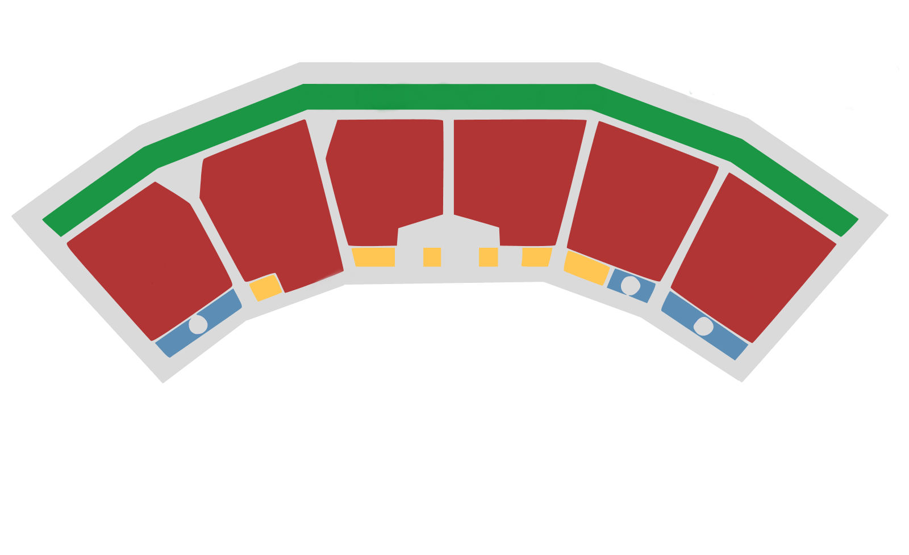

<map name="map">
    <area shape="poly" coords="1271, 301, 1457, 425, 1310, 598, 1168, 500" alt= "Wing 6"/>
    <area shape="poly" coords="1044, 213, 1251, 292, 1149, 491, 988, 431" alt= "Wing 5"/>
    <area shape="poly" coords="793, 210, 1021, 209, 966, 427, 871, 428, 871, 399, 791, 375" alt= "Wing 4"/>
    <area shape="poly" coords="569, 275, 589, 210, 772, 212, 771, 373, 695, 398, 692, 427, 607, 425" alt= "Wing 3"/>
    <area shape="poly" coords="348, 345, 356, 278, 532, 209, 599, 472, 497, 509, 478, 475, 431, 491" alt= "Wing 2"/>
    1<area shape="poly" coords="118, 426, 271, 319, 331, 356, 406, 498, 261, 596, 260, 594" alt= "Wing 1"/>
</map>
<script src="jquery-3.2.1.min.js"></script>
<script src="jquery.rwdImageMaps.min.js"></script>
<script>
$(document).ready(function(e) {
console.log("running");
	$('img[usemap]').rwdImageMaps();
	
	$('area').on('click', function() {
		alert($(this).attr('alt') + ' clicked');
	});
});
</script>